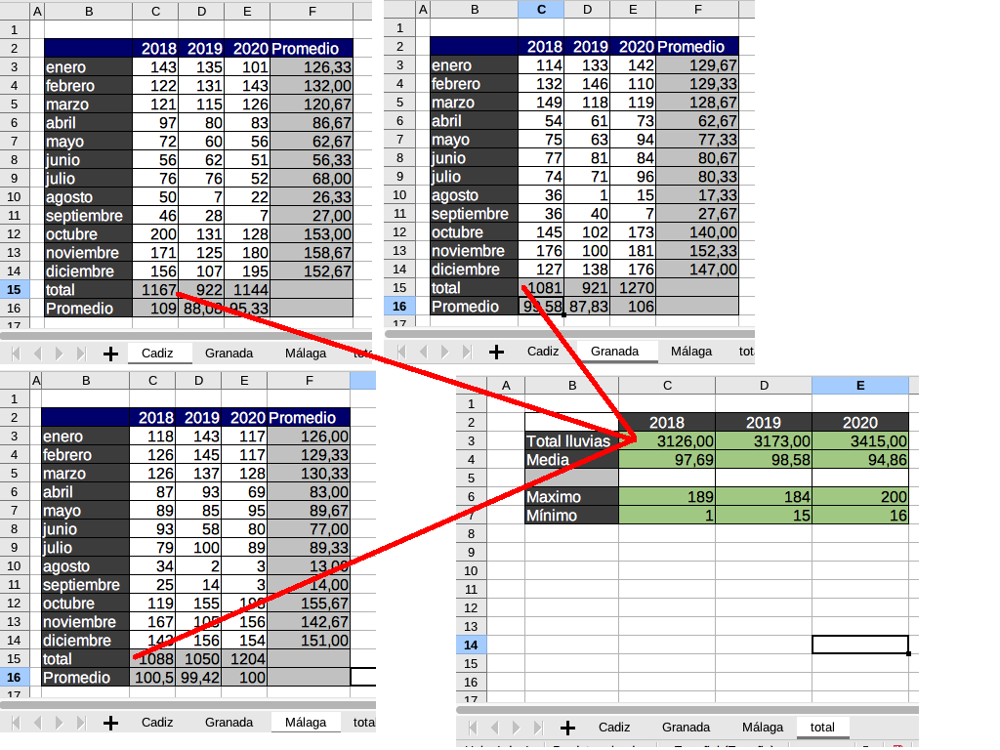

TIYC 1 C.3-Hojas de cálculo
Introducción de datos y formulas básicas
Primera parte
En nuestro ejemplo, vamos a recoger datos de lluvia en 3 puntos distintos de la provincia de Málaga durante un año (mes a mes)
-Rellenaremos los datos con funciones Aleatoio.entre y valores para cada región.
-Posteriormente calcularemos la media por meses, totales y media por cada punto.
-En una zona separada los valores máximos y mínimos de cada punto tal y como se muestra en la imagen siguiente.
- Imagen de recogida de datos en Málaga (contenido de fórmulas)
. Contenido de fórmulas (CC BY-SA)
- Imagen de recogida de datos en Málaga (VALORES)
. Contenido (CC BY-SA)
- Duplicar las hojas para otras provincias como Jaén y Córdoba, simulando tener datos de 3 provincias.
. Hojas (duplicar) (CC BY-SA)
- Crear una hoja de resumen de las 3 provincias anteriores.
. Resumen (CC BY-SA)
- En cada casilla hacer un cálculo visitando las celdas de las hojas implicadas en la fórmula.

. Acceso a celdas de otras hojas (CC BY-SA)
- La media será, el PROMEDIO de las celdas implicadas.

. Acceso a celdas de otras hojas (CC BY-SA)
- Para el máximo y mínimo realizar lo mismo
Consulta el siguiente vídeo explicativo de la tarea realizada.
. Tarea2 (CC BY-SA)
Obra publicada con Licencia Creative Commons Reconocimiento Compartir igual 4.0